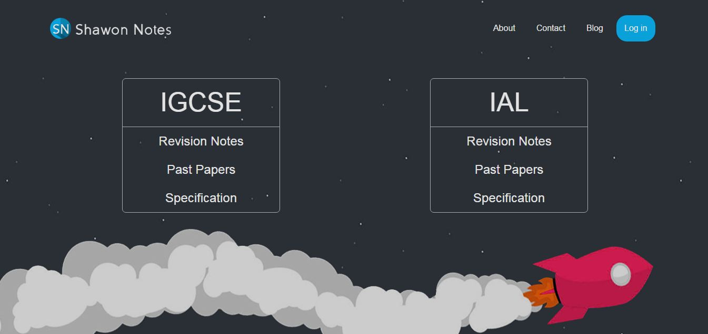

Sep 2021 - Dec 2021
A 2D game-engine with a level editor built by a group 4 for final project in Game Programming course using SFML and C++. The game built on it in Dudeforce which is a side-scrolling shooting game. It makes use of shaders, lighting, inventory, multiple camera-views, overworld map and much more.
Oct 2020 - Aug 2021
Dynamic portfolio management website where user can register accounts and easily setup their portfolio.
Built using REACT, Laravel and MySQL in REST API format.
Jan 2021 - Apr 2021

Plays the game of Starcraft: Broodwar as Protoss race using real time Artificial Intelligence decisions using C++ and BWAPI.
Beats the built-in AI of the game using "Zealot Rush" strategy that includes scouting, appropriate building placement, proper build order, and timing attacks.
Sep 2021 - Oct 2021

Built using SFML and C++.
May 2021 - May 2021

Visualization of Yaffle researchers and contributors using D3.js and the projects they collaborated on.
Mar 2021 - Apr 2021
An ecommerce web scraper namely Best Buy and Walmart. It retrieves product data from the data given the url, and tracks the stock information, price changes and availibility on each update.
Built as part of a group project of 3 using node.js and mongoDB.
Jan 2021 - Apr 2021

Demonstrating Mean filter, Salt and pepper filter and Gaussian blur using Python.
Jan 2021 - Feb 2021
Uses Random Number Generation to generate a star system that consists of randomized stars, planets, moon each with a unique position, temperature, size, and name.

Generated terrain of planets to show land, rocks, and water using Cellular Automata built using C++, SFML, and Visual Studio.
Jan 2021 - Jan 2021

Calculates the distance of each grid from the target and then uses it to compute a vector field to point to the direction.
Sep 2019 - Dec 2019

Game of Blokus built using Java Swing. Allows users to select a sequence of blocks, rotate it and place it on the grid. User can also turn on visual aid toggle if they are colorblind.
Sep 2019 - Dec 2019
Game of checkers built using D3.js and AI implemented using mini-max algorithm.
Sep 2019 - Dec 2019

Finds the closest path between each nodes using Q-Learning.
Built using Javascript.
Sep 2019 - Sep 2019
Game of Chomp built using Java Swing. A 2-player game where the last user to eat the soap(pink) grid will lose.
Sep 2019 - Dec 2019
Built the AI for Connect 4 game using Mini-Max algorithm.
Jan 2021 - Jan 2021

Tron game AI bot built using C++ and SFML.
Sep 2019 - Dec 2019
Implemented reinforcement learning to maximize reward in the multi-armed bandit problem.
July 2017 - Aug 2017

A JS application that retrieves random quotes by famous people.
July 2017 - Aug 2017

A JS application that uses the wikipedia search api to retrieve articles based on keywords.
July 2017 - Aug 2017
Uses the open weather api to display weather of the user's current location.
July 2017 - Aug 2017

A JS application that uses the twitch api to retrieve information of my favorite twitch streamers.
Dec 2013 - Dec 2018
The first website I built where I shared my own study materials of IGCSE and IAL to help fellow students. It reaches over 100k page views each month and is the most popular IGCSE/IAL revision website in Bangladesh.